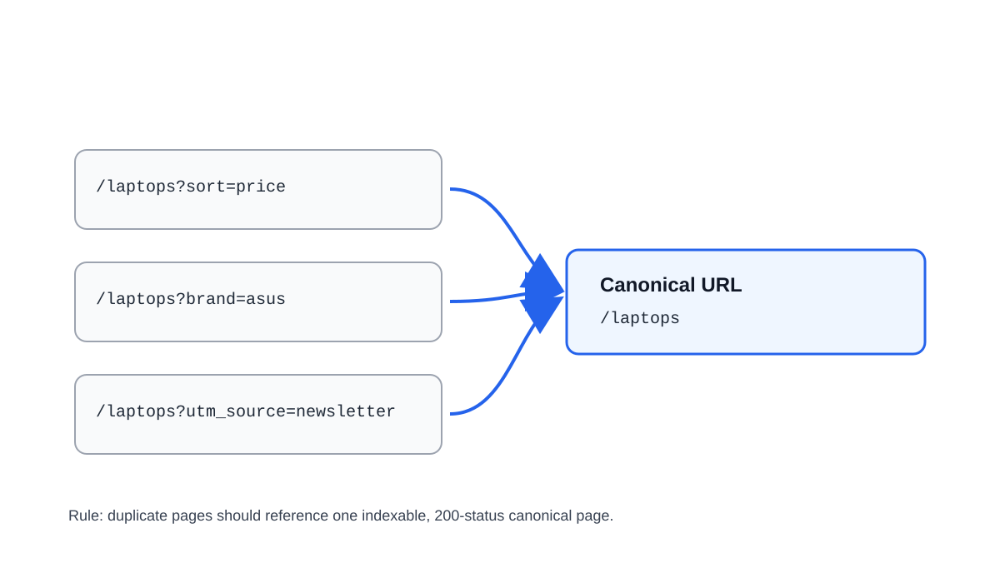
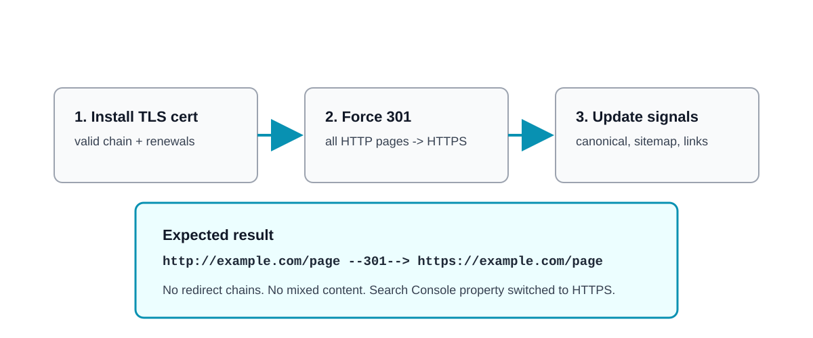
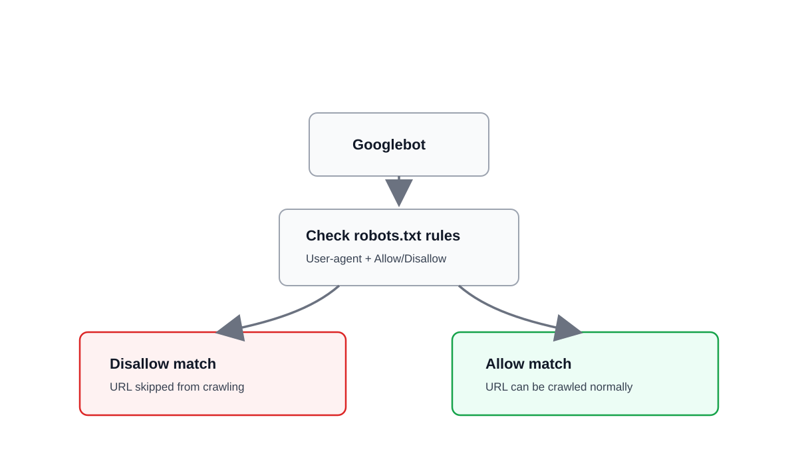
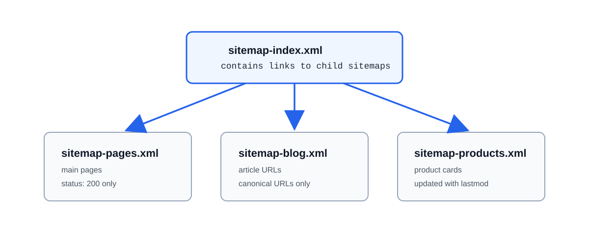
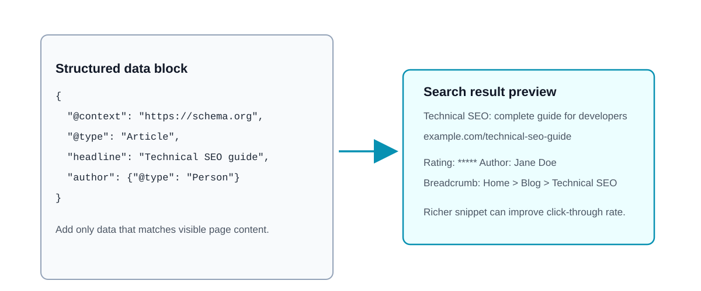
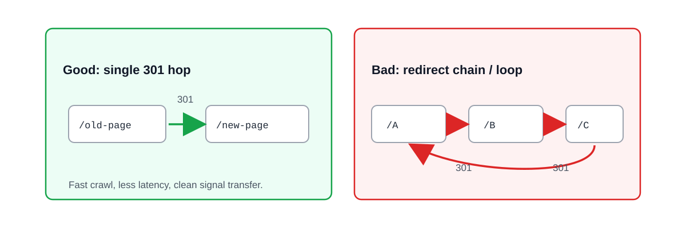
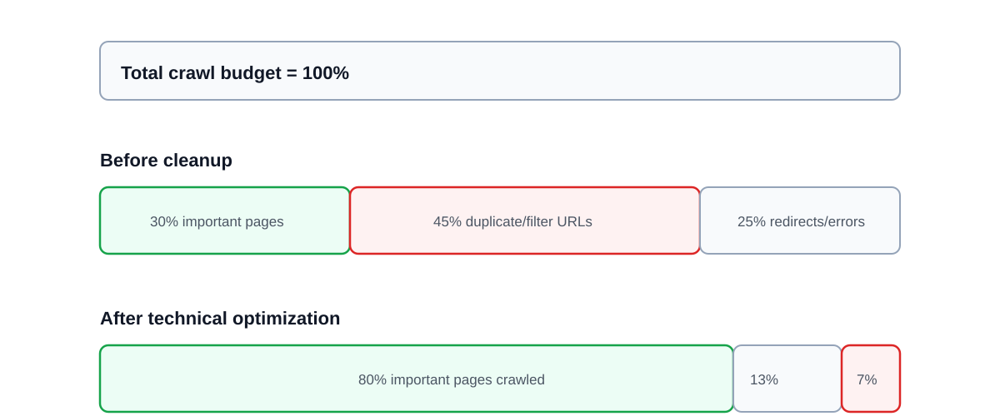
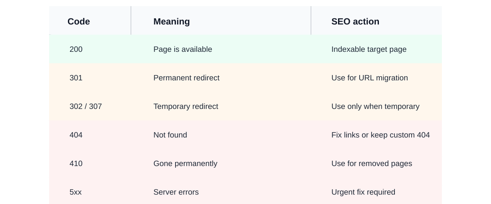
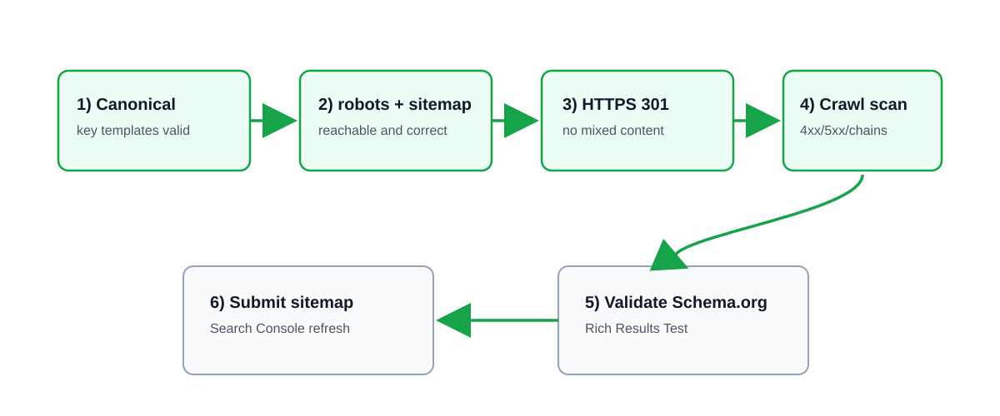

План лекції:
- Дублі сторінок і canonical
- HTTPS та SSL
- robots.txt та sitemap.xml
- Schema.org та редіректи
Що таке технічне SEO
Технічне SEO - це оптимізація сайту для коректного сканування, індексації та ранжування в пошуку.
- Допомагає пошуковим ботам правильно читати сайт
- Зменшує технічні помилки, що блокують ріст трафіку
- Підсилює ефект контенту та внутрішньої перелінковки
Дублі сторінок: чому це проблема
Дублі - це сторінки з однаковим або дуже схожим контентом, доступні за різними URL.
Наслідки:
- Розмивання посилальної ваги
- Витрата crawl budget
- Невизначеність: яку сторінку показати в пошуку
Типові джерела дублів
- Параметри URL: ?sort=price, ?utm_source=...
- HTTP/HTTPS або www/non-www версії
- Слеш наприкінці URL: /category і /category/
- Фільтри та пагінація в e-commerce
- Окремі версії друку або копії сторінок
Canonical: базова ідея
Canonical вказує пошуковій системі основну (канонічну) версію сторінки серед дублів.
- Використовуємо в <head> кожної дубльованої сторінки
- Canonical має вести на індексовану сторінку з кодом 200
- Краще ставити абсолютні URL
Canonical: приклад реалізації

Помилки з canonical
- Canonical на 404 або на URL з редіректом
- Ланцюжки canonical: A -> B -> C
- Взаємні конфлікти: A канонізує на B, а B на A
- Різні canonical для мобільної й десктопної копії без логіки
- Закриття canonical-сторінки через robots.txt
HTTPS та SSL/TLS
HTTPS - це HTTP поверх захищеного шифрування TLS (історично SSL).
- Шифрує дані між браузером і сервером
- Підтверджує автентичність сайту
- Є базовою вимогою довіри та якості для SEO
Чому HTTPS важливий для SEO
- Google офіційно враховує HTTPS як сигнал ранжування
- Браузери попереджають про "Not secure" на HTTP-сторінках
- Безпечний сайт підвищує довіру та конверсію
- Потрібен для сучасних веб-API та платіжних інтеграцій
Міграція з HTTP на HTTPS: чекліст

robots.txt: роль у технічному SEO
Файл robots.txt керує доступом ботів до певних частин сайту.
- Розміщується в корені: https://site.com/robots.txt
- Зменшує сканування службових і дубльованих URL
- Не є інструментом захисту приватних даних

robots.txt: приклад
User-agent: *
Disallow: /admin/
Disallow: /cart/
Allow: /catalog/
Sitemap: https://example.com/sitemap.xml
Блокувати варто технічні розділи, а не цінний контент.
Приклад
sitemap.xml: навіщо потрібен
sitemap.xml - це список пріоритетних URL для індексації.
- Полегшує пошуковикам знаходження важливих сторінок
- Особливо корисний для великих сайтів і нових проєктів
- Містить тільки канонічні URL з кодом відповіді 200
sitemap.xml: Структура sitemap index і дочірніх sitemap

Що перевіряти в sitemap.xml
- Немає 3xx, 4xx, 5xx URL
- Немає noindex-сторінок у мапі сайту
- Оновлена дата lastmod для змінених сторінок
- Розбиття великих sitemap на частини через sitemap index
- Подання sitemap у Google Search Console
Приклад
Schema.org: структуровані дані
Schema.org допомагає пошуковим системам точніше зрозуміти вміст сторінки.
- Формат за замовчуванням - JSON-LD
- Дає шанс на rich results (рейтинги, FAQ, breadcrumbs)
- Підвищує CTR через візуально багатші сніпети
Schema.org: приклад JSON-LD
<script type="application/ld+json">
{
"@context": "https://schema.org",
"@type": "Article",
"headline": "Технічне SEO: базовий гайд",
"author": {
"@type": "Person",
"name": "Ім'я Автора"
}
}
</script>

Редіректи: типи та застосування
- 301 - постійне перенесення (основний SEO-випадок)
- 302/307 - тимчасове перенаправлення
- 308 - постійний редірект із збереженням HTTP-методу
- Для SEO зазвичай потрібен один крок редіректу, без ланцюжків
Типові помилки з редіректами
- Ланцюжки 301: A -> B -> C
- Петлі редіректів (redirect loop)
- 302 замість 301 після постійного переїзду
- Редірект на нерелевантну сторінку
- Внутрішні лінки на старі URL
- Зламані редіректи після релізу
- Немає перевірки логів і crawl-звітів
- Редірект 404-сторінок на головну без логіки

Швидкий аудит технічного SEO
- Перевірити індексацію та дублікати URL
- Перевірити canonical на ключових шаблонах сторінок
- Перевірити HTTPS, сертифікат і mixed content
- Перевірити robots.txt і sitemap.xml
- Валідувати Schema.org через Rich Results Test
- Перевірити редіректи (301/302, ланцюжки, петлі)
Інструменти для роботи
- Google Search Console - покриття, sitemap, індексація
- Screaming Frog / Netpeak Spider - технічний краулінг
- PageSpeed Insights - базова перевірка швидкості сторінок
- SSL Labs - перевірка TLS-конфігурації
- Rich Results Test - перевірка структурованих даних
Crawl budget: що це і коли важливо
Crawl budget - обсяг URL, які бот готовий сканувати за певний час.
- Критично для великих сайтів (десятки тисяч сторінок)
- Втрачається на дублі, фільтри та технічні URL
- Оптимізація crawl budget прискорює індексацію важливих сторінок
Як економити crawl budget
- Закривати службові розділи в robots.txt
- Ставити canonical для параметричних URL
- Прибирати биті лінки та зайві редіректи
- Тримати sitemap актуальним і чистим
- Уникати «сміттєвих» сторінок без цінності
Crawl budget: Діаграма розподілу crawl budget до і після оптимізації

HTTP-коди відповідей для SEO
Коротка шпаргалка статус-кодів та дій для SEO-команди:

404 vs 410: що обрати
- 404 - коли сторінка може з'явитися знову
- 410 - коли сторінка видалена назавжди
- Для масово видалених URL 410 пришвидшує очищення індексу
- Не редіректити всі 404 на головну - це погана практика
Логи сервера в технічному SEO
Лог-аналіз показує, як саме Googlebot та інші краулери обходять сайт.
- Які URL скануються найчастіше
- Де боти витрачають бюджет на неважливі сторінки
- Які сторінки важливі, але майже не скануються
Faceted navigation і фільтри
- Комбінації фільтрів часто створюють тисячі дублів URL
- Індексувати потрібно лише сторінки з пошуковим попитом
- Інші варіанти: canonical + обмеження в robots.txt
- Слідкувати, щоб важливі фільтри лишалися доступними для індексу
Міграція сайту: критичні ризики
- Зміна URL-структури без карти 301 редіректів
- Втрата canonical і мета-тегів під час релізу
- Блокування продакшену через robots.txt: Disallow: /
- Відсутність пострелізного технічного аудиту
Післярелізний технічний чекліст
Після кожного релізу проходимо перевірку в такій послідовності:
